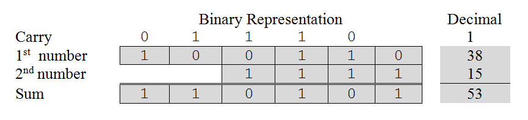
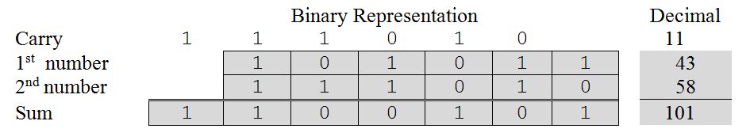
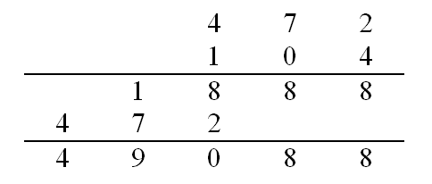
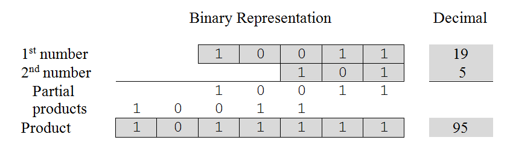
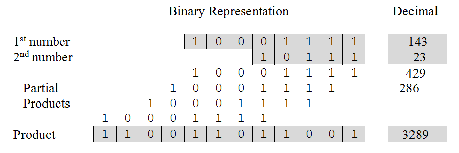
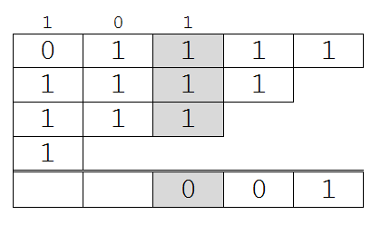
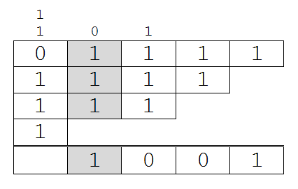
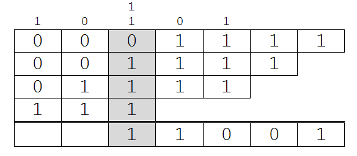

So far we have learned how to represent unsigned numbers in base ten, base two, and base sixteen. We have also studied ways of converting numbers between these three bases. We now turn our attention to the question of how arithmetic operations, such as addition and multiplication, can be performed on unsigned binary numbers.[4]
Let’s begin by examining binary addition of single digit numbers. First of all, zero plus zero equals zero, which is represented in binary as:
0 + 0 = 0
Zero plus one and one plus zero both equal one. These expressions are represented as:
0 + 1 = 1
1 + 0 = 1
Finally, one plus one equals two. But, two cannot be represented as a single binary digit. Instead, we record a zero in the one’s position and carry a one over to the two’s position.
This situation can be represented as:
1 + 1 = 0 [carry 1]
Multi-digit binary addition uses the same strategy employed in decimal addition. One works right to left from the units column to the most significant digit making sure that the carry from the previous column is added to the current column. Because the carry digit for a particular column may be “1” at the same time the corresponding digits of both of the numbers being added are also “1”, it is possible to encounter “one plus one plus one equal three” while performing addition. Since 11two equals three, “1”should be placed in the current position and another “1” carried over to the position immediately to the left of the current position. This situation can be represented as:
1 + 1 + 1 = 1 [carry 1]
illustrates two separate binary addition operations. Part (a) of the figure presents the addition of 38ten + 15ten = 53ten written in both its binary and decimal form. Part (b) of the figure involves slightly larger numbers, but the principle is the same. The expression 43ten + 58ten = 101ten is shown in both its binary and decimal form.
Part (a) – Thirty-eight plus fifteen
Part (b) – Forty-three plus fifty-eight
Addition in base two and base ten
Binary multiplication is also fairly simple. Zero times zero equals zero, as does zero times one and one times zero. One times one equals one. These expressions can be represented in base two as:
0 × 0 = 0
0 × 1 = 0
1 × 0 = 0
1 × 1 = 1
Notice that none of these four expressions generate a carry and only one generates a result other than zero. As we will see below, these features lead to binary multiplication being easy to perform, in fact easier to perform than decimal multiplication.
Multiplication of multi-digit binary numbers works in a manner similar to multiplication of decimal numbers. As we all learned in grade school, multiplication problems are solved by adding together several partial products. A partial product is formed by multiplying a single digit of the bottom number times the entire top number. For example, given the base ten multiplication problem 472 × 104, we would solve it in the following way.
The first partial product is given by multiplying 4 times 472, which is 1888. The second partial product is computed as 0 times 472, which is 0. Normally we do not write down zero partial products. The final partial product is 1 times 472. Notice that we write this partial product so that its rightmost digit is directly under the digit of the second number that we multiplied by (i.e., 1). We then add the partial products, column by column from right to left, in order to obtain the final answer, 49,088 in this case.
We apply this same strategy to perform binary multiplication. illustrates two separate binary multiplication operations. Part (a) of the figure presents 19ten × 5ten = 95ten (10011two × 101two = 1011111two) in both binary and decimal notations.
Part (a) – Nineteen times five
Part (b) – One hundred forty-three times nineteen
Multiplication in base two and base ten
Again we form partial products by multiplying the top number by each of the digits of the bottom number. Since the rightmost digit of the second number is “1”, the first partial product is given by 1 times 10011, or 10011. The rightmost digit of this partial product is aligned with the rightmost digit of the second number. We do not record the partial product for zero times something, so multiplying the first number by the second digit of the second number, “0”, doesn’t generate anything. The final partial product is computed as 1 times 10011 where the rightmost digit of this result is aligned beneath the third digit of the second number. The partial products are then added to obtain the final result, 1011111two.
As we have just seen, in binary multiplication the formation of the partial products is very easy since we are only multiplying by “1” ( in which case we copy the top number into the proper position ) or “0” ( in which case we do nothing ). The only “difficult” steps in this process are making sure we align the partial products correctly and compute the sum of those products accurately.
Part (b) of illustrates binary multiplication on somewhat larger numbers. We copy the top number as a partial product everywhere there is a 1 digit in the second number, each time making sure we align the partial product so that the least significant digit is directly underneath the 1 we are multiplying by. We get the final result by adding the partial products together.
When adding together the partial products it is important that we handle the carry values properly. Because there is no limit on the size of the numbers to be multiplied, it is possible that there will be a large number of partial products. This situation can lead to carry values that extend over multiple columns. To illustrate, if, when summing partial products, we encounter a column of five 1’s, we would add 1 + 1 + 1 + 1 + 1 to get 101two. We would then need to write a “1” in the current column and carry “10”; placing the “0” in the column immediately to the left of the current column and the “1” immediately to the left of that column. This is no different from the situation we encounter when adding up a long series of decimal numbers. If the current column of digits added to one hundred and one, we would place a “1” in the current column, carry a “0” to the next column, and carry “1” to the column after that.
Now let’s take a closer look at the summation of the partial products in Part (b) of . The rightmost column of partial products offers no problem. It is simply “1” plus nothing, giving a result of “1” with no carry. The second column requires us to add 1 + 1 resulting in a “0” with “1” carried over to the third column. Column three is interesting and is illustrated below:
The sum of the digits in column three, including the carry, is four, 100two. Hence, a “0” is written in column three, a “0” is carried to column four and a “1” to column five.
Column four contains three 1’s giving us a sum of 11two. Hence, we write a “1” in column four and carry a “1” to column five. Note that the “1” we just carried to column five joins the carry of “1” already in that column.
Column five now contains a total of five 1’s (including the two carries). Since five is written in binary as 101two, we write a “1” in column five, carry a “0” into column six and a “1” into column seven. The current state of the summation of partial products after adding the contents of column five is illustrated below:
The remainder of the computation is carried out in a similar manner, always being careful to handle the carries properly. The final result of the computation can be seen in Part (b) of .
Exercises for
Footnotes
[4] We’ll hold off on subtraction until we discuss ways of representing negative numbers in the next part of this section.